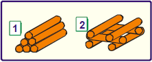

Acertos:
Erros:
CINÉTICA
QUÍMICA
(PUC-SP) Considere as duas fogueiras representadas abaixo, feitas, lado a lado, com o mesmo tipo e qualidade de lenha.

A rapidez da combustão da lenha será:
Maior na fogueira 1, pois a superfície de contato com o ar é maior.
Maior na fogueira 1, pois a lenha está mais compactada, o que evita a vaporização de componentes voláteis.
Igual nas duas fogueiras, uma vez que a quantidade de lenha é a mesma e estão no mesmo ambiente.
Maior na fogueira 2, pois a lenha está menos compactada, o que permite maior retenção de calor pela madeira.
Maior na fogueira 2, pois a superfície de contato com o ar é maior.
Confirmar
 CINÉTICA
CINÉTICA